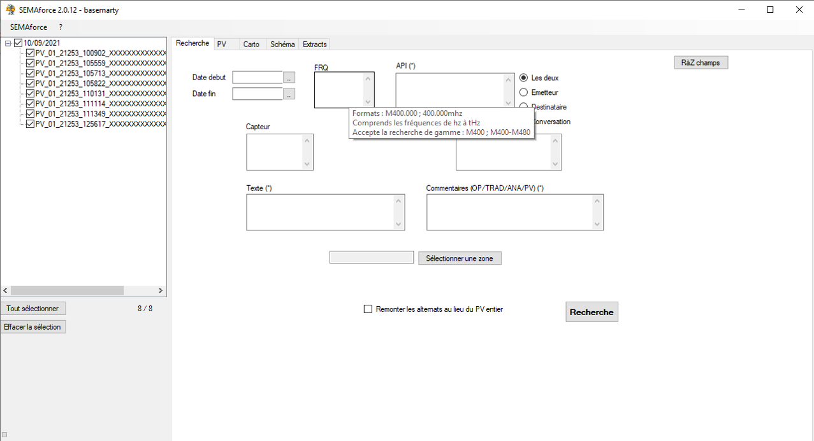
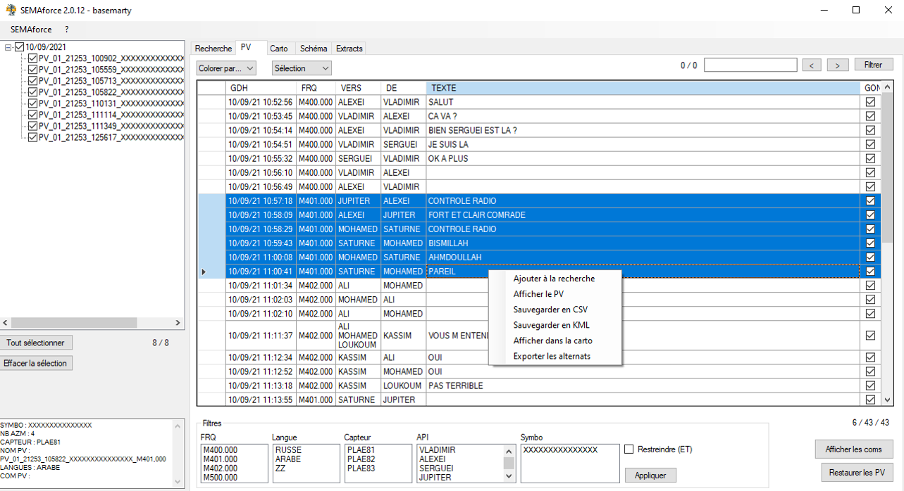
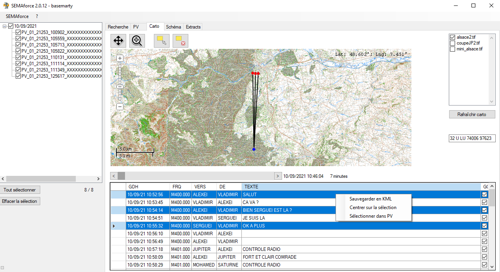
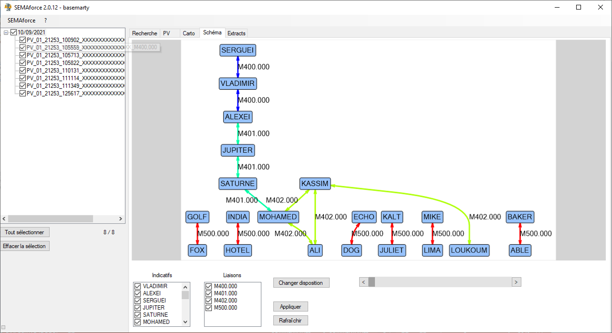
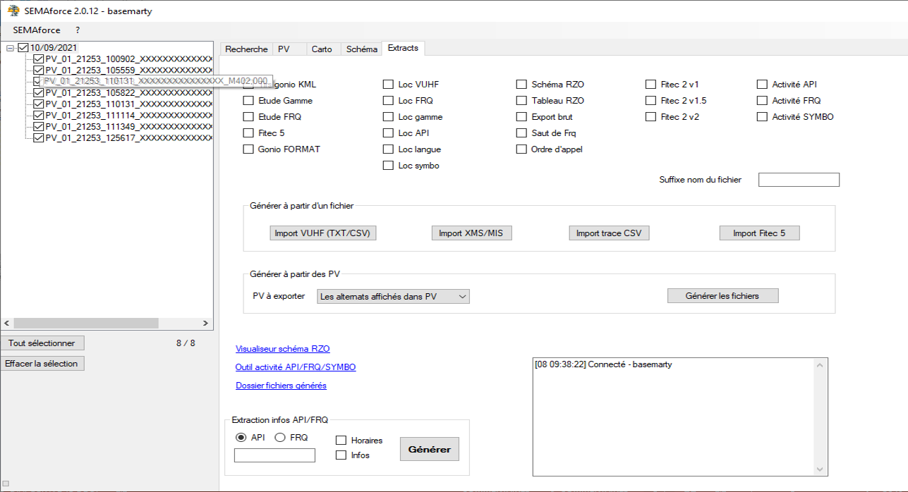

SEMAforce exploite au maximum la base de données SEMAFORE pour localiser
les activités VUHF et générer des extract réutilisables
Recherche
- Recherche par date, fréquences, indicatifs, capteur, etc
- Recherche de conversation entre deux indicatifs
- Recherche par zone géographique

Affichage des PV
- Recherche rapide
- Filtre par fréquence, langue, capteur, etc
- Coloration des alternats

Cartographie
- Affichage des relevés radiogoniométriques
- Sélection du fond de carte
- Curseur timeline

Schéma
- Génération d'un schéma réseau

Extracts
- Liste des indicatifs par fréquences
- Localisation d'activités VUHF
- Relevés radiogoniométriques
- Relevés horaires des indicatifs et fréquences

Import de fichiers
Au lieu d'utiliser la base SEMAFORE, lit un fichier pour construire des extracts.
- Fichier MIS du RESOLVE
- BDD VUHF du CCAROEM
- FITEC 5 format SEMAforce